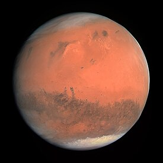
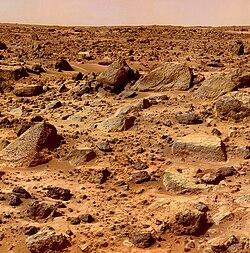

مریخ[۱] یا بهرام چهارمین سیاره در منظومهٔ شمسی است که در یک مدار طولانیتر و با سرعتی کمتر از زمین به دور خورشید میچرخد. هر یک بار گردش این سیاره به دور خورشید معادل ۶۸۷ شبانهروز زمین طول میکشد و طول شب و روز آن از زمین کمی طولانیتر است.
نام فارسی این سیاره بهرام و نام عربی-یونانی آن مِریخ است. در کتابهای قدیمی فارسی آن را فلک شحنهٔ پنجم و سایس رواق پنجم نیز نامیدهاند.
اتمسفر مریخ سرخرنگ است و از زمین در آسمان شب نیز سرخی آن دیده میشود. کرهٔ مریخ دو قمر کوچک به نامهای فوبوس و دِیموس دارد که ظاهری نابسامان دارند. این دو قمر شاید شهابسنگ هستند که در مدار مریخ به دام افتادهاند. اگر شخصی در کرهٔ مریخ باشد خواهد دید که فوبوس سه بار در یک روز طلوع و غروب میکند. دیموس نیم فوبوس بوده و چنانچه از مریخ به آن نگاه کنیم این قمر بیشتر همانند یک ستاره خواهد بود تا یک ماه. خورشیدگرفتگی در مریخ به دلیل کوچک بودن قمرهای آن کامل نیست. قمرهای مریخ به سطح آن نزدیک هستند و بزرگترین قمر آن فوبوس است که گردش آن به دور سیارهٔ مریخ نزدیک به ۷ ساعت و ۳۹ دقیقه و ۲۷ ثانیه است. زمان گردش مداری دیموس نیز ۱ روز و ۶ ساعت و ۲۱ دقیقه و ۱۶ ثانیه است.
 مریخ از زمین کم چگالیتر است، به گونهای که حجمی برابر ۱۵٪ و جرمی برابر ۱۱٪ زمین دارد. مساحت سطح آن تنها اندکی کمتر از مجموع سطوح خشکیهای زمین است. مریخ در برابر عطارد بزرگتر و دارای جرم بیشتر و در نتیجه چگالیتر است. همین زمینه سبب شدهاست نیروی گرانش بیشتری در سطح مریخ وجود داشته باشد. مریخ از نظر میزان حجم و جرم، هشتمین جسم در منظومهٔ شمسی است. مریخ از دید اندازه، جرم و گرانش سطح، حالتی میان زمین و ماه (ماه زمین) دارد؛ ماه قطری برابر یک دوم قطر مریخ دارد، در حالی که قطر زمین حدود دو برابر قطر مریخ است، زمین دارای جرمی در حدود ده برابر جرم مریخ است، در حالی که جرم ماه ده برابر کمتر از مریخ است. نمای سرخ-نارنجی رنگ مریخ در اثر وجود آهن (III) اکسید، که بیشتر به هماتیت یا زنگ آهن مشهور است، به وجود آمدهاست.